# 什么是卷积神经网络
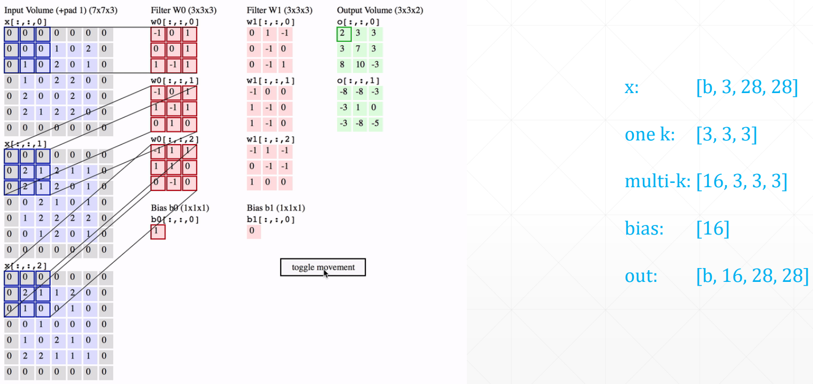
注意，是把一个 kernel 里的三个窗口做完运算后生成的三个值累加起来，得到新的 feature map。对于下一层有 16 个通道，则是把一个 kernel 里的 16 个窗口做完运算后生成的 16 个值累加起来，算作一个新的 feature。
# 代码示例
# 类风格 API
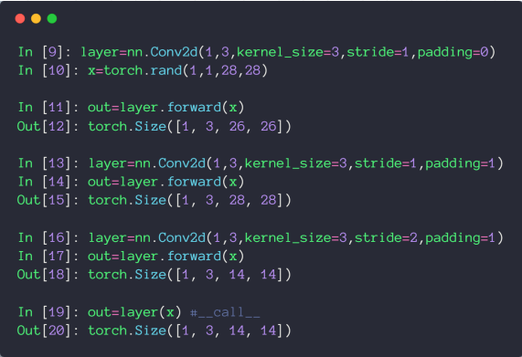
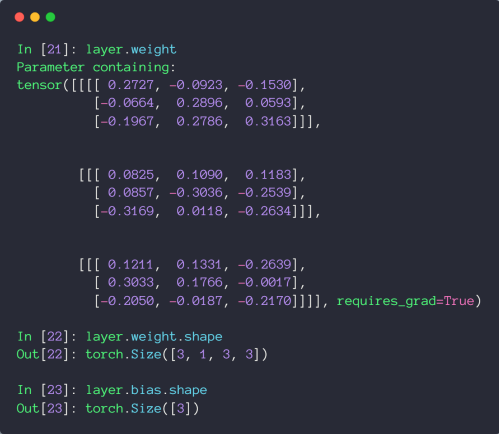
# 函数风格 API
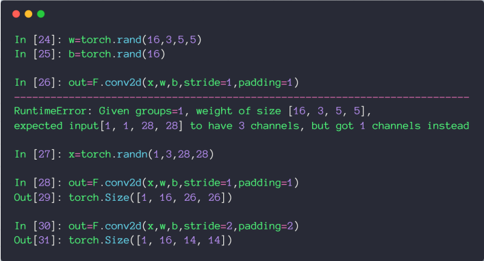
# 池化层和采样
# 池化层
最大池化：取 kernel 里的最大值
平均池化：取 kernel 里的平均值
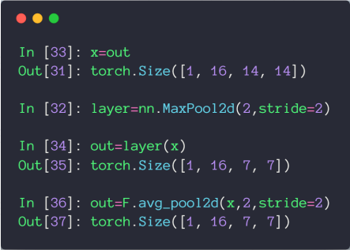
# 上采样
将特征图放大
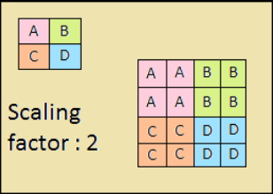
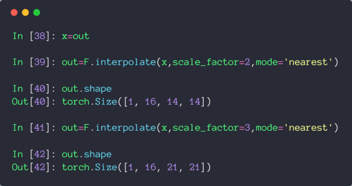
# BatchNorm
# Image Normalization
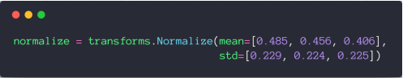
这里的均值和方差是统计了数百万张图片在 RGB 三通道的均值和方差，所以通过这些数，就可以将图片大致缩放到均值为 0，方差为 1 的正态分布上了
# Batch Normalization
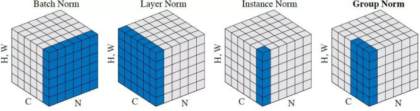
这里只考虑 Batch Norm
注意，它是将 N * H * W 数据合起来进行 Normalization 了，依旧是一个 Batch 里有三个 feature map，就对分别对每个的 feature map，将所有图片 N，所有宽高 H，W 合并起来进行 Normalization，这个就叫 Batch Normalization
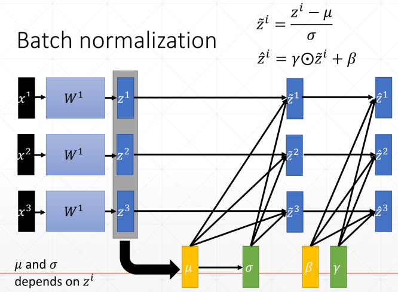
从上图中可以看出 和 是从数据中计算得出的，计算得出 和 后，就可以将数据归一化到均值为 0，方差为 1 的正态分布上了。而 和 是将分布转换到均值为 ，方差为 的正态分布上。
和 的 requires_grad 也是为 True 的，因为他们也是要进行梯度计算的
# 代码示例
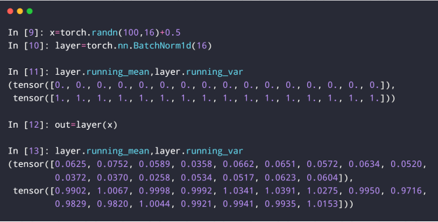
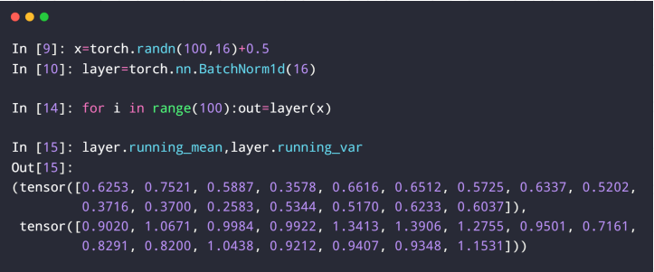
running_mean 就是上面的 ， running_var 就是 ，每次 batch normalization 后，都会更新这两个属性
# 伪代码
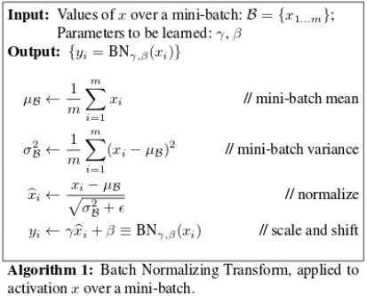
# 查看参数
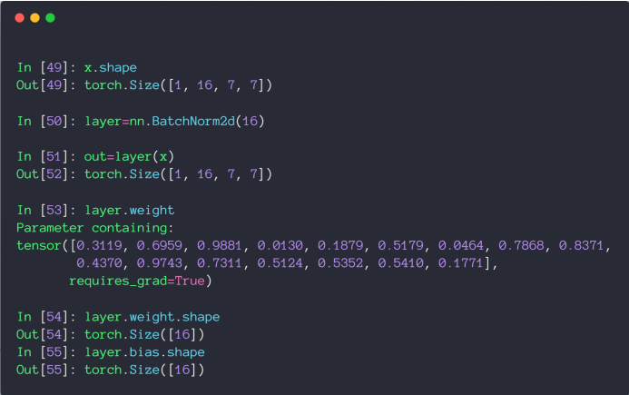
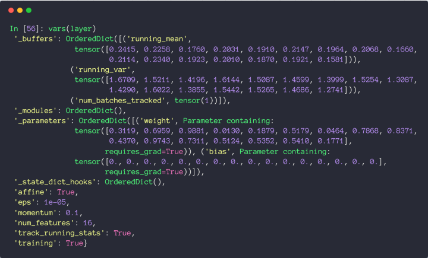
注意，在 Test 中，因为我们往往只会预测一个 Sample，所以统计 和 就是没有意义的。
所以在 Test 时，会把全局的 running_mean 和 running_var 赋值给 和 ，同时，在 Test 时，也没有 Backward，所以 和 是不需要更新的，所以在 Test 时，需要调用 eval() 方法将模式切换过来再送入 Sample 进行预测。
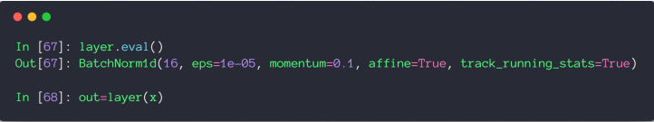
# 使用 Batch Normalization 的优点
- 收敛速度更快
- 更好的最优解
- 更稳定
# 经典卷积网络
# LeNet
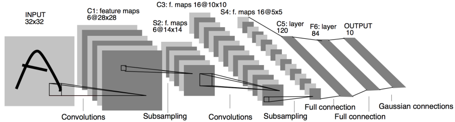
# AlexNet
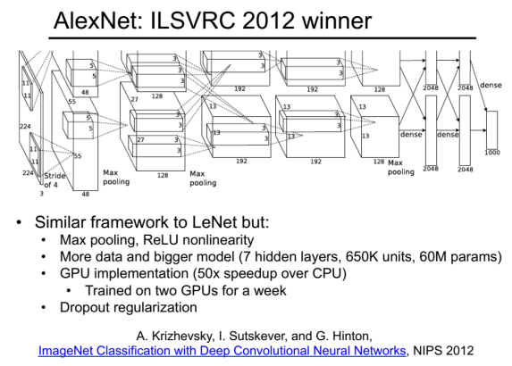
# VGGNet
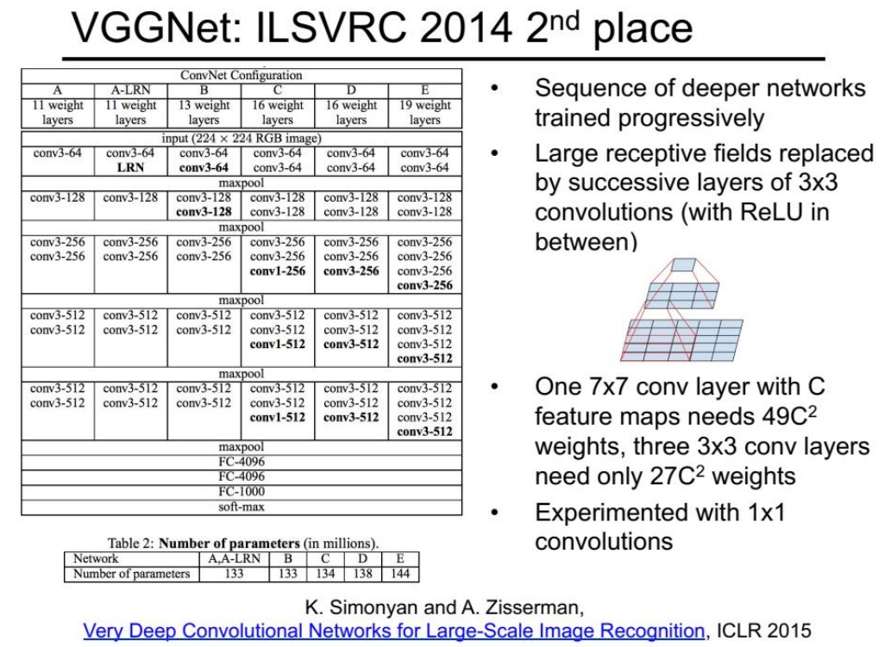
# GoogLeNet
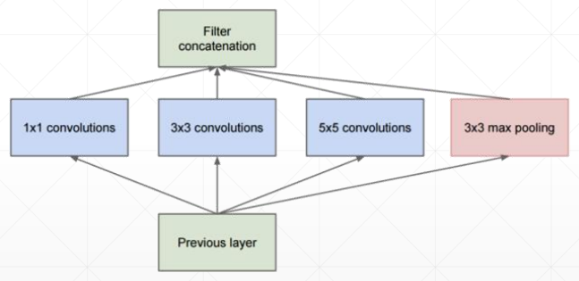
# ResNet
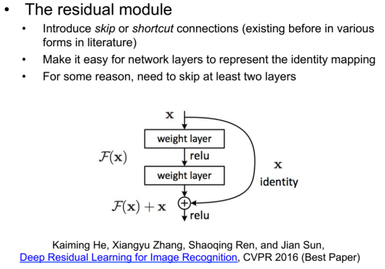
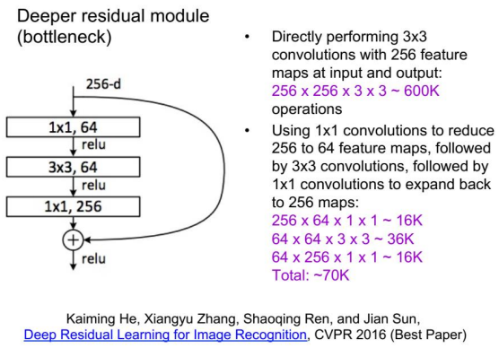
# 代码示例
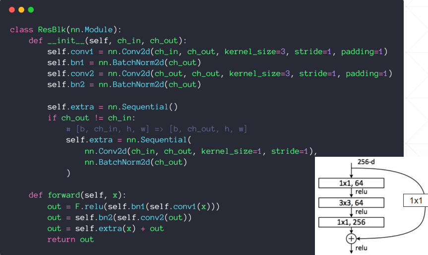
import torch | |
from torch import nn | |
from torch.nn import functional as F | |
from torch.utils.data import DataLoader | |
from torchvision import datasets | |
from torchvision import transforms | |
from torch import nn, optim | |
# from torchvision.models import resnet18 | |
class ResBlk(nn.Module): | |
""" | |
resnet block | |
""" | |
def __init__(self, ch_in, ch_out): | |
""" | |
:param ch_in: | |
:param ch_out: | |
""" | |
super(ResBlk, self).__init__() | |
self.conv1 = nn.Conv2d(ch_in, ch_out, kernel_size=3, stride=1, padding=1) | |
self.bn1 = nn.BatchNorm2d(ch_out) | |
self.conv2 = nn.Conv2d(ch_out, ch_out, kernel_size=3, stride=1, padding=1) | |
self.bn2 = nn.BatchNorm2d(ch_out) | |
self.extra = nn.Sequential() | |
if ch_out != ch_in: | |
# [b, ch_in, h, w] => [b, ch_out, h, w] | |
self.extra = nn.Sequential( | |
nn.Conv2d(ch_in, ch_out, kernel_size=1, stride=1), | |
nn.BatchNorm2d(ch_out) | |
) | |
def forward(self, x): | |
""" | |
:param x: [b, ch, h, w] | |
:return: | |
""" | |
out = F.relu(self.bn1(self.conv1(x))) | |
out = self.bn2(self.conv2(out)) | |
# short cut. | |
# extra module: [b, ch_in, h, w] => [b, ch_out, h, w] | |
# element-wise add: | |
out = self.extra(x) + out | |
return out | |
class ResNet18(nn.Module): | |
def __init__(self): | |
super(ResNet18, self).__init__() | |
self.conv1 = nn.Sequential( | |
nn.Conv2d(3, 16, kernel_size=3, stride=1, padding=1), | |
nn.BatchNorm2d(16) | |
) | |
# followed 4 blocks | |
# [b, 64, h, w] => [b, 128, h ,w] | |
self.blk1 = ResBlk(16, 16) | |
# [b, 128, h, w] => [b, 256, h, w] | |
self.blk2 = ResBlk(16, 32) | |
# # [b, 256, h, w] => [b, 512, h, w] | |
# self.blk3 = ResBlk(128, 256) | |
# # [b, 512, h, w] => [b, 1024, h, w] | |
# self.blk4 = ResBlk(256, 512) | |
self.outlayer = nn.Linear(32*32*32, 10) | |
def forward(self, x): | |
""" | |
:param x: | |
:return: | |
""" | |
x = F.relu(self.conv1(x)) | |
# [b, 64, h, w] => [b, 1024, h, w] | |
x = self.blk1(x) | |
x = self.blk2(x) | |
# x = self.blk3(x) | |
# x = self.blk4(x) | |
# print(x.shape) | |
x = x.view(x.size(0), -1) | |
x = self.outlayer(x) | |
return x | |
def main(): | |
batchsz = 32 | |
cifar_train = datasets.CIFAR10('cifar', True, transform=transforms.Compose([ | |
transforms.Resize((32, 32)), | |
transforms.ToTensor() | |
]), download=True) | |
cifar_train = DataLoader(cifar_train, batch_size=batchsz, shuffle=True) | |
cifar_test = datasets.CIFAR10('cifar', False, transform=transforms.Compose([ | |
transforms.Resize((32, 32)), | |
transforms.ToTensor() | |
]), download=True) | |
cifar_test = DataLoader(cifar_test, batch_size=batchsz, shuffle=True) | |
x, label = iter(cifar_train).next() | |
print('x:', x.shape, 'label:', label.shape) | |
device = torch.device('cuda') | |
# model = Lenet5().to(device) | |
model = ResNet18().to(device) | |
criteon = nn.CrossEntropyLoss().to(device) | |
optimizer = optim.Adam(model.parameters(), lr=1e-3) | |
print(model) | |
for epoch in range(1000): | |
model.train() | |
for batchidx, (x, label) in enumerate(cifar_train): | |
# [b, 3, 32, 32] | |
# [b] | |
x, label = x.to(device), label.to(device) | |
logits = model(x) | |
# logits: [b, 10] | |
# label: [b] | |
# loss: tensor scalar | |
loss = criteon(logits, label) | |
# backprop | |
optimizer.zero_grad() | |
loss.backward() | |
optimizer.step() | |
# | |
print(epoch, 'loss:', loss.item()) | |
model.eval() | |
with torch.no_grad(): | |
# test | |
total_correct = 0 | |
total_num = 0 | |
for x, label in cifar_test: | |
# [b, 3, 32, 32] | |
# [b] | |
x, label = x.to(device), label.to(device) | |
# [b, 10] | |
logits = model(x) | |
# [b] | |
pred = logits.argmax(dim=1) | |
# [b] vs [b] => scalar tensor | |
correct = torch.eq(pred, label).float().sum().item() | |
total_correct += correct | |
total_num += x.size(0) | |
# print(correct) | |
acc = total_correct / total_num | |
print(epoch, 'acc:', acc) | |
if __name__ == '__main__': | |
main() |
# nn.Module 相关 API
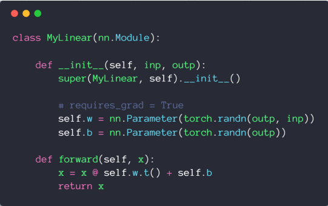
# 优点 1 Container
可以直接加入 nn.Sequential
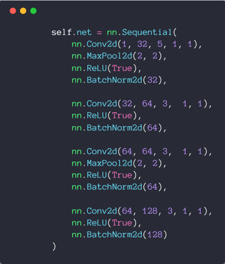
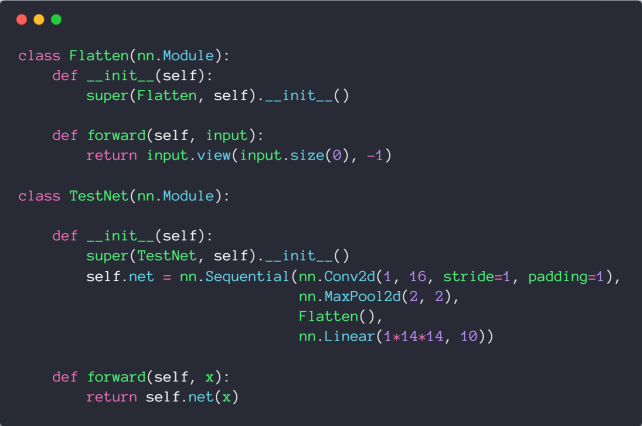
# 优点 2 可以方便的查看参数
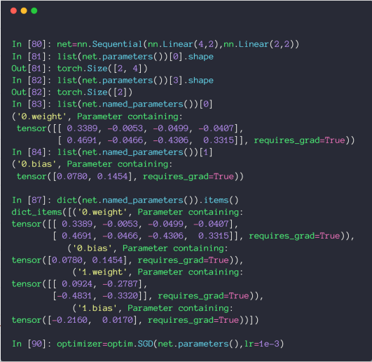
# 优点 3 可以方便的查看所有节点
- modules: all nodes
- children: direct children
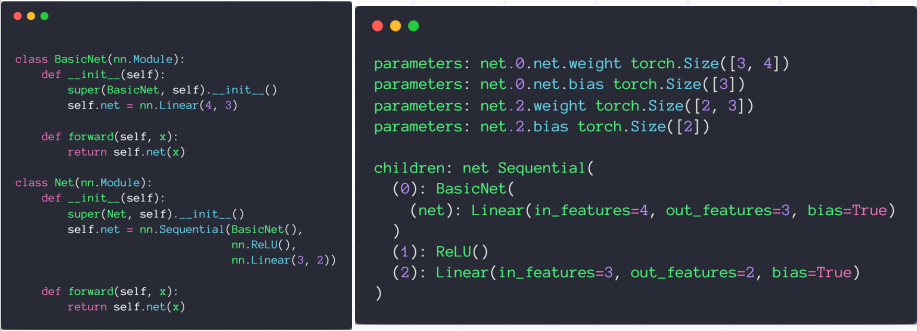
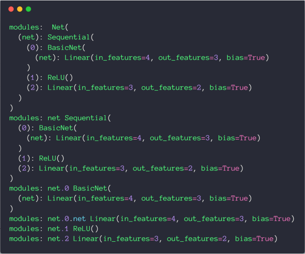
# 优点 4 可以方便的转移到 GPU 设备上
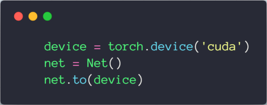
# 优点 5 保存和加载模型
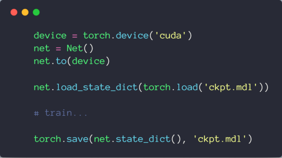
# 优点 6 方便的在训练和测试之间切换
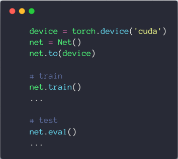
# 代码示例
import torch | |
from torch import nn | |
from torch import optim | |
class MyLinear(nn.Module): | |
def __init__(self, inp, outp): | |
super(MyLinear, self).__init__() | |
# requires_grad = True | |
self.w = nn.Parameter(torch.randn(outp, inp)) | |
self.b = nn.Parameter(torch.randn(outp)) | |
def forward(self, x): | |
x = x @ self.w.t() + self.b | |
return x | |
class Flatten(nn.Module): | |
def __init__(self): | |
super(Flatten, self).__init__() | |
def forward(self, input): | |
return input.view(input.size(0), -1) | |
class TestNet(nn.Module): | |
def __init__(self): | |
super(TestNet, self).__init__() | |
self.net = nn.Sequential(nn.Conv2d(1, 16, stride=1, padding=1), | |
nn.MaxPool2d(2, 2), | |
Flatten(), | |
nn.Linear(1*14*14, 10)) | |
def forward(self, x): | |
return self.net(x) | |
class BasicNet(nn.Module): | |
def __init__(self): | |
super(BasicNet, self).__init__() | |
self.net = nn.Linear(4, 3) | |
def forward(self, x): | |
return self.net(x) | |
class Net(nn.Module): | |
def __init__(self): | |
super(Net, self).__init__() | |
self.net = nn.Sequential(BasicNet(), | |
nn.ReLU(), | |
nn.Linear(3, 2)) | |
def forward(self, x): | |
return self.net(x) | |
def main(): | |
device = torch.device('cuda') | |
net = Net() | |
net.to(device) | |
net.train() | |
net.eval() | |
# net.load_state_dict(torch.load('ckpt.mdl')) | |
# | |
# | |
# torch.save(net.state_dict(), 'ckpt.mdl') | |
for name, t in net.named_parameters(): | |
print('parameters:', name, t.shape) | |
for name, m in net.named_children(): | |
print('children:', name, m) | |
for name, m in net.named_modules(): | |
print('modules:', name, m) | |
if __name__ == '__main__': | |
main() |
# 数据增强
# 翻转
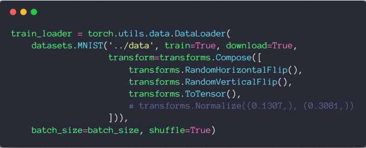
# 旋转
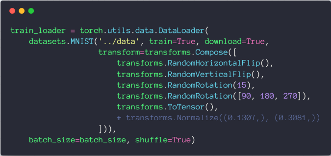
# 缩放和裁剪
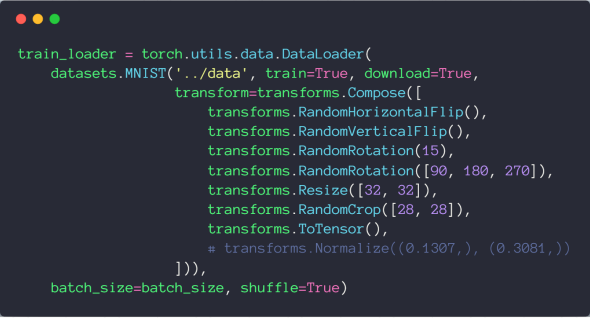
# 代码示例
import torch | |
import torch.nn as nn | |
import torch.nn.functional as F | |
import torch.optim as optim | |
from torchvision import datasets, transforms | |
from visdom import Visdom | |
batch_size=200 | |
learning_rate=0.01 | |
epochs=10 | |
train_loader = torch.utils.data.DataLoader( | |
datasets.MNIST('../data', train=True, download=True, | |
transform=transforms.Compose([ | |
transforms.RandomHorizontalFlip(), | |
transforms.RandomVerticalFlip(), | |
transforms.RandomRotation(15), | |
transforms.RandomRotation([90, 180, 270]), | |
transforms.Resize([32, 32]), | |
transforms.RandomCrop([28, 28]), | |
transforms.ToTensor(), | |
# transforms.Normalize((0.1307,), (0.3081,)) | |
])), | |
batch_size=batch_size, shuffle=True) | |
test_loader = torch.utils.data.DataLoader( | |
datasets.MNIST('../data', train=False, transform=transforms.Compose([ | |
transforms.ToTensor(), | |
# transforms.Normalize((0.1307,), (0.3081,)) | |
])), | |
batch_size=batch_size, shuffle=True) | |
class MLP(nn.Module): | |
def __init__(self): | |
super(MLP, self).__init__() | |
self.model = nn.Sequential( | |
nn.Linear(784, 200), | |
nn.LeakyReLU(inplace=True), | |
nn.Linear(200, 200), | |
nn.LeakyReLU(inplace=True), | |
nn.Linear(200, 10), | |
nn.LeakyReLU(inplace=True), | |
) | |
def forward(self, x): | |
x = self.model(x) | |
return x | |
device = torch.device('cuda:0') | |
net = MLP().to(device) | |
optimizer = optim.SGD(net.parameters(), lr=learning_rate) | |
criteon = nn.CrossEntropyLoss().to(device) | |
viz = Visdom() | |
viz.line([0.], [0.], win='train_loss', opts=dict(title='train loss')) | |
viz.line([[0.0, 0.0]], [0.], win='test', opts=dict(title='test loss&acc.', | |
legend=['loss', 'acc.'])) | |
global_step = 0 | |
for epoch in range(epochs): | |
for batch_idx, (data, target) in enumerate(train_loader): | |
data = data.view(-1, 28*28) | |
data, target = data.to(device), target.cuda() | |
logits = net(data) | |
loss = criteon(logits, target) | |
optimizer.zero_grad() | |
loss.backward() | |
# print(w1.grad.norm(), w2.grad.norm()) | |
optimizer.step() | |
global_step += 1 | |
viz.line([loss.item()], [global_step], win='train_loss', update='append') | |
if batch_idx % 100 == 0: | |
print('Train Epoch: {} [{}/{} ({:.0f}%)]\tLoss: {:.6f}'.format( | |
epoch, batch_idx * len(data), len(train_loader.dataset), | |
100. * batch_idx / len(train_loader), loss.item())) | |
test_loss = 0 | |
correct = 0 | |
for data, target in test_loader: | |
data = data.view(-1, 28 * 28) | |
data, target = data.to(device), target.cuda() | |
logits = net(data) | |
test_loss += criteon(logits, target).item() | |
pred = logits.argmax(dim=1) | |
correct += pred.eq(target).float().sum().item() | |
viz.line([[test_loss, correct / len(test_loader.dataset)]], | |
[global_step], win='test', update='append') | |
viz.images(data.view(-1, 1, 28, 28), win='x') | |
viz.text(str(pred.detach().cpu().numpy()), win='pred', | |
opts=dict(title='pred')) | |
test_loss /= len(test_loader.dataset) | |
print('\nTest set: Average loss: {:.4f}, Accuracy: {}/{} ({:.0f}%)\n'.format( | |
test_loss, correct, len(test_loader.dataset), | |
100. * correct / len(test_loader.dataset))) |